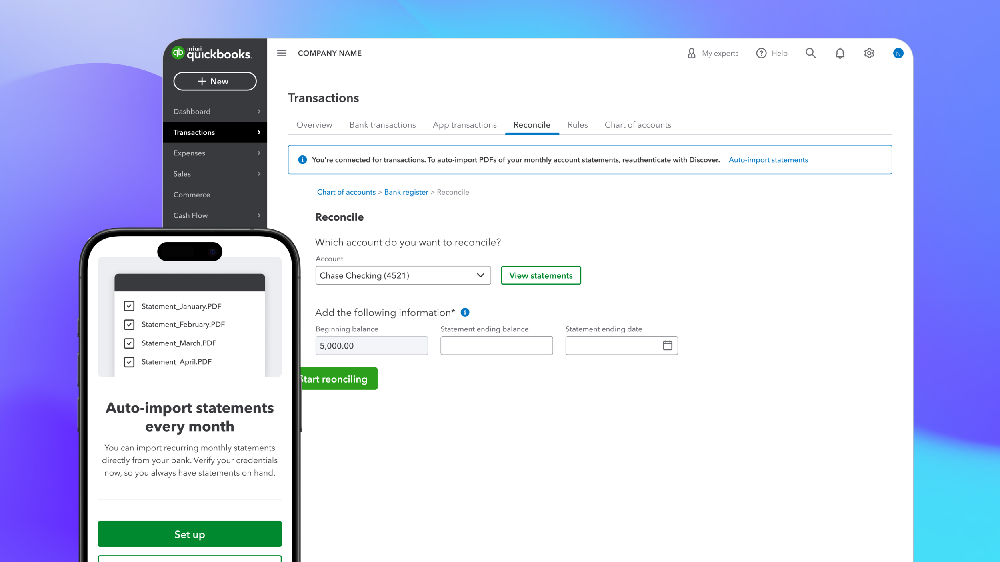
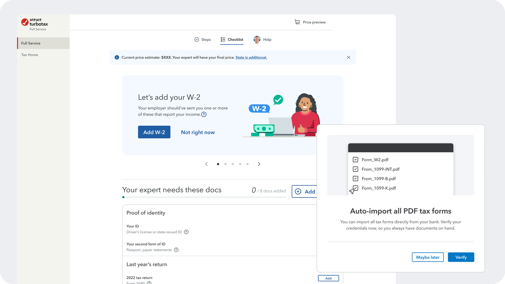
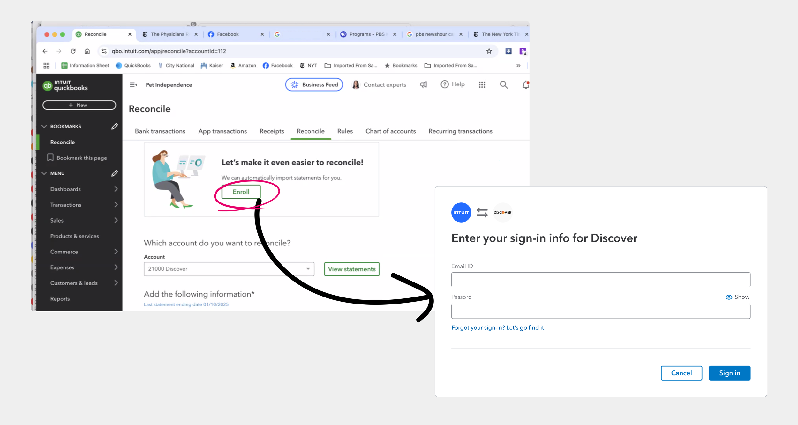
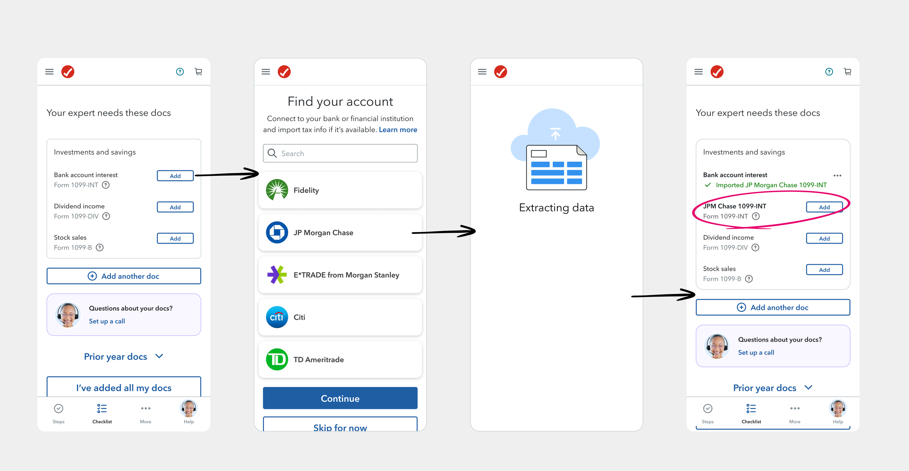
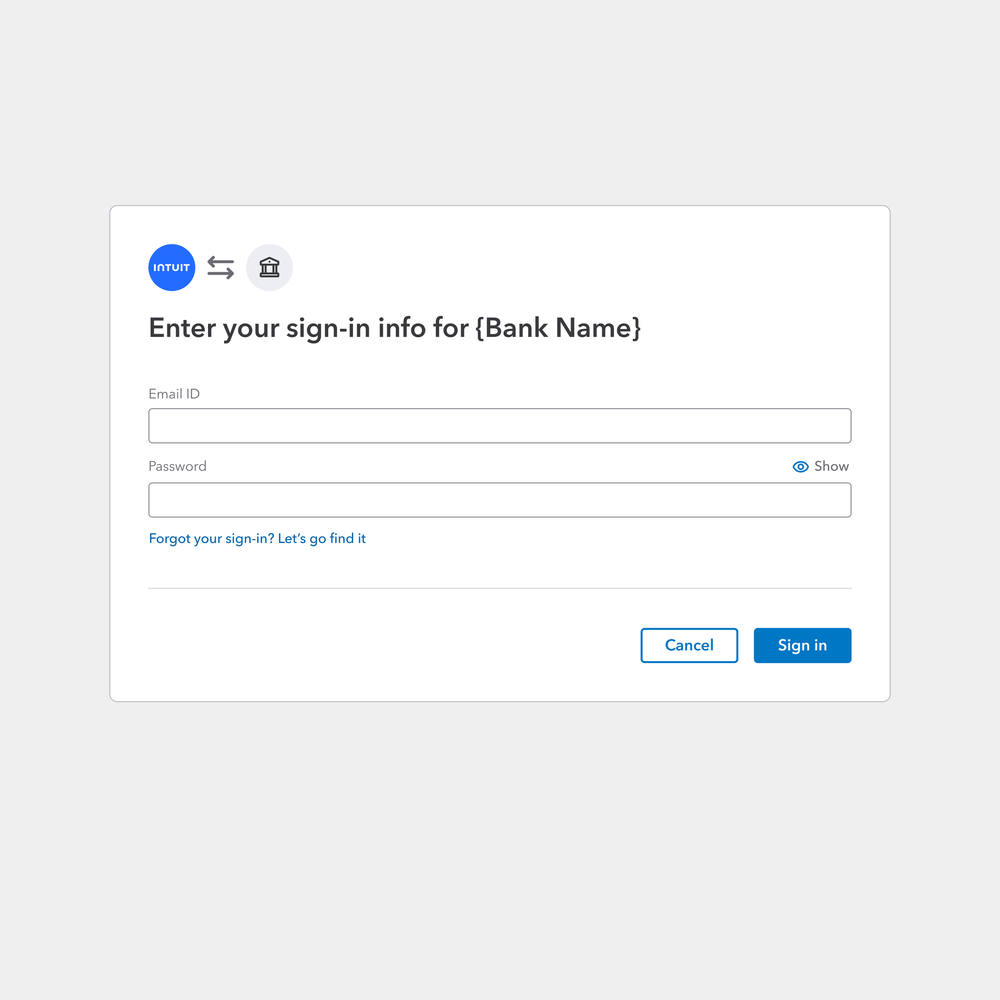
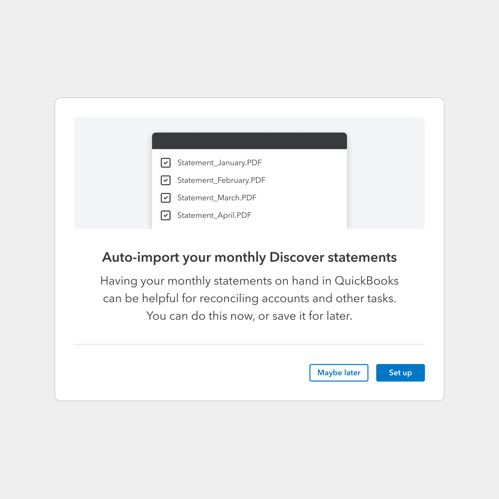
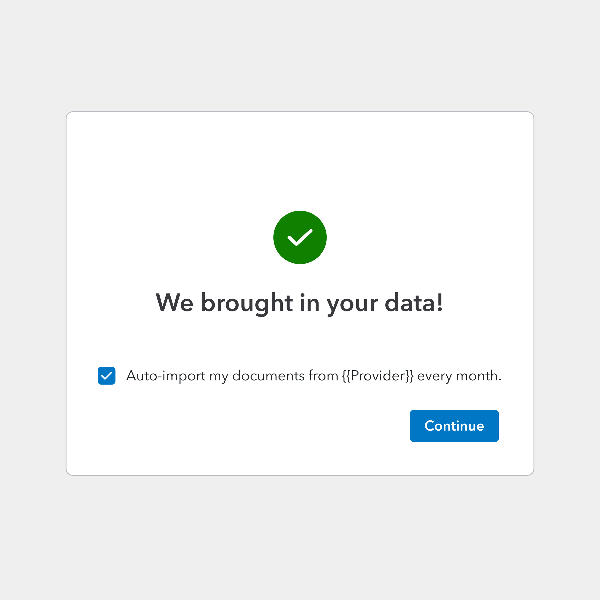
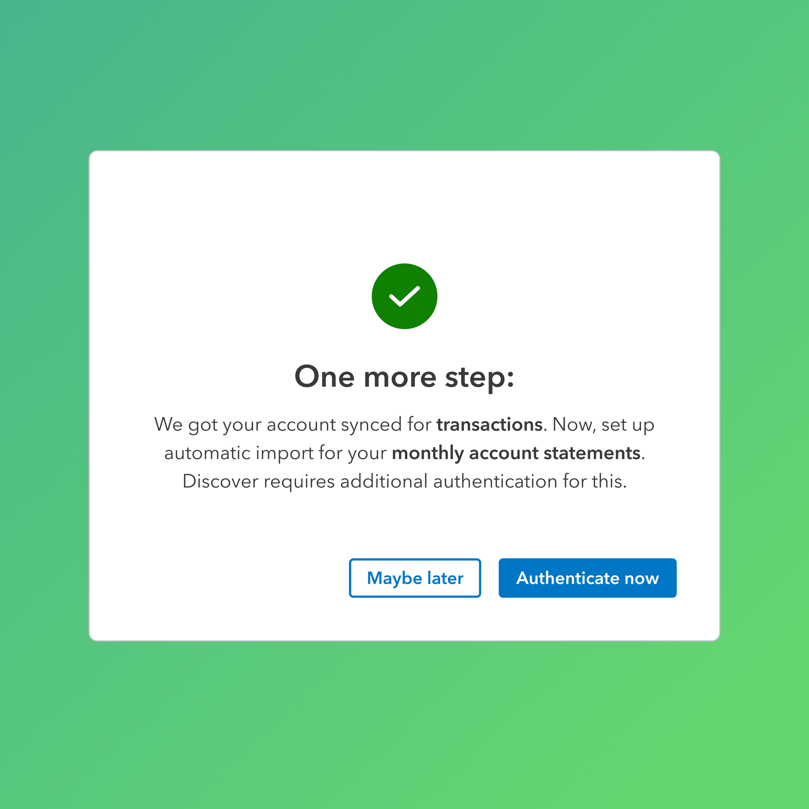

Document
Auto Import
I worked around a techinical challenge currently giving customers a "double-login" friction at a critical auth experience — shifting user mental models from "why am I logging in again?" to "I'm granting access to my documents."


01 · Challenge
The "double-login" that was costing completions
Banks use separate secure channels to transmit different data types. This means, for an Intuit customer, they can authenticate once to sync transactions, but a second explicit authorization is required for PDF documents — like monthly statements and tax forms. Most customers didn't know auto-import was even possible, and when asked to log in twice in a row, they abandoned and reverted to manual upload.

The problem Quickbooks team brought to us:
Customers are promised “automatically imported statements” with a simple “Enroll” button, yet 75% of the customers drop off the funnel immediately — after being prompted to “sign in” instead.
Althought we were technically giving cusotmers the ability to set up everyhing in one go, the current technical and legal constraints was nicknamed the “brute force” approach, giving our customers a high-friciton "Double-login" experience. From a UX standpoint, this solution was rolled out for customers without clear value proposition and clarity to address the second authentication. Today, customers are only able to manually document management, and I, have to design around it.
02 · Problem Statements
I am an Intuit QuickBooks customer
I want to reconcile my monthly statements to ensure my books are accurate
However, I have to manually download PDFs from my bank and upload them to QuickBooks every month
Which makes me feel frustrated that the platform isn’t automating a repetitive task as promised
I am an Intuit TurboTax Full Service customer
I want to import my financial data quickly so I can finish my tax return
However, I am asked to log in to my bank a second time just to share my tax forms, which feels redundant and suspicious
Which makes me feel confused and hesitant, and choose to hunt for paper documents instead
I am an Intuit TurboTax Full Service Expert
I want to verify my client’s tax documents efficiently to ensure a fast and accurate filing
However, most clients don't realize they can automate this early, so I have to prompt and wait til customers to return and manually upload low-quality photos or incomplete PDFs
Which makes me feel frustrated that the platform isn’t automating a repetitive task as promised
03 · My design & strategic contribution
An End-to-end one-platform design strategy, with proactive partnership across business units
I looked beyond the orignal proudct scope of QuickBooks to avoid fragmented experiences across platform in the future. I proactively connected with TurboTax designers and PMs to understand their expert-led workflow, co-facilitated roundtables with TurboTax experts, and helped architect a solution built for cross-BU scalability before I started pixle pushing in Figma.
I delivered design audits, high-fidelity usability testing prototypes and research-backed design decks for my PM partner to get senior leadership buy-in, successfully getting sign-off for development resources..

TurboTax Full Service — experts waiting on manual uploads from customers who could have automated it
04 · Design process
Solving for the right problem
I hypothesized that,
1. Customer do not want to manually enter sign-in info;
2. Customer do not understand why they need to sign-in

User walkthroughs revealed some more neuanced insights:
1. Low commitment - Many users only enter the funnel because they are curious, and turn away immediately upon seeing a login when nothing seemed necessary or urgent.
2. Zero value proposition vs. Resistance to change Customers we talked to actually considered the second sign-in a security necessity. However, they are unwilling to "change how Quickbooks has been working for them",
— some customers even walked us through how fast they already worked out a routine with their Quickbooks and Bank browseres open side by side. There is nothing to convince them they can do a little more now, to make an experience a lot faster in the future.
I synthesized the insights into a design strategy that focused on clarifying the value proposition.
05 · User testing
What does a clear value proposition look like to our customers?
I designed and conducted three rounds of usability testing with my Content Design partner, iterating from an imagery-heavy approach (high resonance, low scalability) through to a stripped-down conversational design that proved most successful in A/B tests — and was a much lighter engineering lift to scale across Banking, Tax, and Loans.

Pros: Acknowledges the result of the initial sign-in, clarifying customers brought in data, not documents.
Cons: Low readability on the actual prompt for next step; The status of the checkbox changes the next screen, adding engineering complexity in how the widgets are currently wired together.

Pro: A descriptive headline and added graphic made explicit what documents will be brought in.
Cons: The headline and imagery alltogether made users feel their original task were interrupted; While the graphic asset can be templatized too, no team wanted to own the customizization for a variety of scenarios and products.

Final interation: conversational & scalable.
It was time to admit a shifting of the gears ourselves. My content designer and I tested one more iteration that we personally preferrred less. At the time, the tone felt a bit too conversational for our more rigid rationalization, yet, it tested in a A/B testings against the other versions, and proved to be most successful for conversion. This was also fatalistic news, as serving different sets of text content across Banking, Tax, Loans scenarios is a much lighter engineering lift.
06 · Impact
A heavily user-tested solution, key business talks go ahead with confidnce.
The iterative design process proved key to decrease the friction in the “double-login“ experience, without challenging the existing tech constraints. User testing showed users show almost 100% preferences toward new design. The final design also more favorably shifted user perception from "Why am I logging in again?" to "I'm granting access to my secure documents." We project a significant lift in auto-import adoption, driving higher conversion rates and reducing the manual document burden for millions of users.
Our internal case study projected to drive signi ficant lift in automated document imports across QuickBooks and TurboTax. Today, business talks to onboard banks with heavy data regulation and low connection rate go ahead across Banking, Tax, and Loans.
07 · What I learned
Who are my business "customers" as a platform capability designer, and how does design serve them?
As a designer on a Platform team, I realized quickly that my "customers" are not just the small business owners using QuickBooks or the taxpayers using TurboTax. The Product teams themselves are not merely "stakeholders". They are also my "customers". If the platform solution doesn't solve their specific architectural or design language needs, it won't be adopted. I learned to treat internal stakeholders with the same level of empathy, and carried that forward with me throughout the project.
Even with the blessing of my Product owner, I naturally felt nervous. However, I learned that proactive outreach is the best cure for uncertainty, and showing up with my aforementinoed empathy, paired with a figma board full of screenshots of existing broken connection issues like a writer pitching a story to a publisher, put my solution and my team in a good spotlight. In those conversations, my team was not just "gathering requirements", we were seen as the problem solvers and more importantly, the connective tissue between a platform org and product orgs. Together, we built true stress-tested experiences.